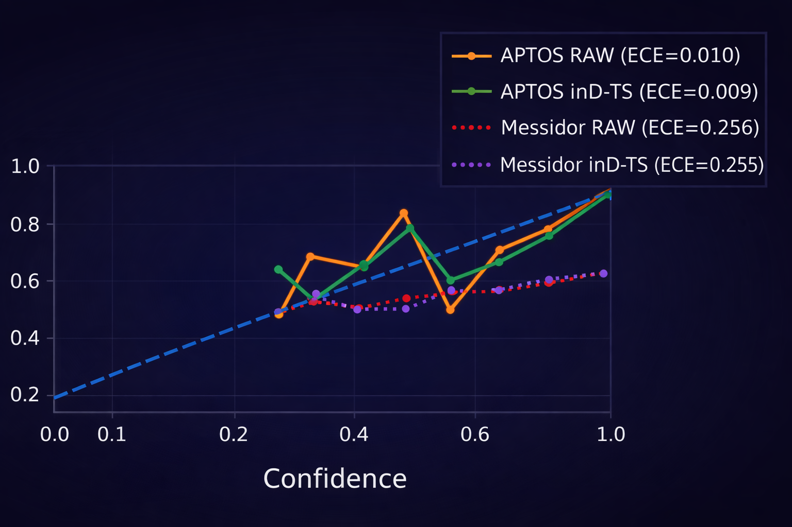
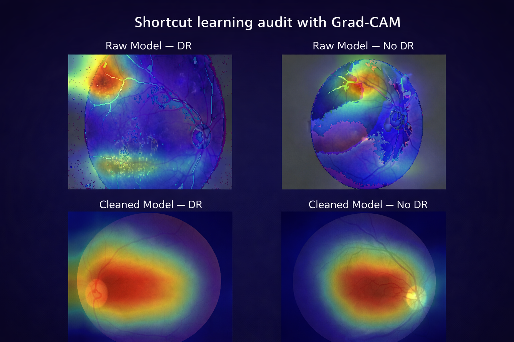

What non-clinical cues did the model exploit?
Wright State University · Computer Science PhD
Reliable AI is not a leaderboard problem.
I study what happens after benchmark accuracy looks good: dataset shift, calibration failure, shortcut learning, semantic mismatch, high-confidence error, and the knowledge structures needed to make AI more defensible.
Research thesis
The interesting failures begin where the benchmark ends.
My work follows one thread: a model is only useful when we understand what it learned, whether its confidence is warranted, and whether its prediction target still means the same thing when the data source changes.
Does performance survive a new dataset or provenance?
Do confidence scores still correspond to reality?
Can explicit semantics make reasoning more reliable?
Selected research
Four projects. One reliability agenda.
Each project is connected directly to its GitHub code, reproducibility notes, results or audit artifacts, and citation metadata.
Visual evidence
Show the behavior, not just the score.
Representative outputs from ongoing reliability work in retinal AI.

Reliability diagrams expose changes that accuracy and AUROC alone can hide.

Attribution analysis tests whether evidence comes from retinal structure or peripheral artifacts.
Publication vault
Full Scholar profile ↗
Outputs, without the wall of text.
Trajectory
Open full résumé ↗
From applied AI to reliability research.
Research practice
Service, review, and methodological discipline.
Contact
Interested in reliable AI that survives contact with new data?
Research collaboration, faculty discussion, peer review, and trustworthy AI work.